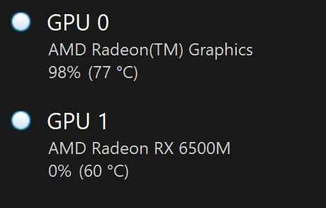

A short note:
You might think I haven't given this engine a name yet. But you'd be wrong! The name is wip, and that's for good reason. I've started projects many times because I came up with a cool name for them. But as soon as I start a project like that, the project's doomed, because I'm hyped for the cool name, not for what the project actually is. When the novelty of the name wears off, so does my motivation to finish the project, and by giving it a dumb name like work in progress, I think I'm finally excited about the project for the project, and not for the name.
I'll start with the language I chose for this project, because I'm 1) really enjoying it and 2) kind of unconventional for these types of things.
I'm using C. Why C? Before this project, I programmed mainly in C++, and before that, I used managed languages like Java and C#. Though I enjoyed programming in those languages at the time, I realized that I was prone to writing unnecessarily complex code when given the resources to do so.
For example, I'd use huge amounts of C++ templating, even though I wasn't going to be releasing the engine to the public or anything, so that bit shouldn't've even been there in the first place. Or I'd develop some hugely complex state management system, which only served to muddle the waters between me and the finished feature.
In the languages I used to use, it was like the language features served to push me in the direction of unnecessary complexity, whereas in C, I feel like complexity is something I have to actively seek out (which I'm trying my best not to do).
Before I get farther into bikeshedding territory, let's move on to the parts of the engine I'm really proud of!
I'm super proud of this. The biggest hurdle for me is always getting some sort of collision detection in place, and the daunting task has killed many a short project of mine. Though the engine is currently not physically based in any way, it does work to keep the player above ground and outside of trees. I've had to optimize it to get it working at real time, but it's nowhere near being fully efficient.
I wanted it to support three different shapes: triangle meshes, capsules, and spheres. It was relatively easy to pull code to handle collisions between triangles and spheres, and because capsules are like a special case of spheres, it was relatively easy to adapt the code to work with them, too.
Great. I now have a working physics engine, right? No.
Sure, the collisions worked, but that's a moot point when the game now runs at five frames per second, so it's time to optimize. In the engine's current state, the world is partitioned into regions that are the same size as a chunk. Next, each of the physics objects in view are placed in the regions that their bounding boxes intersect with, which is the first step to reducing expensive compares when doing collision resolution. Next, objects are checked in pairs in each region, but pairs are skipped when their bounding boxes don't intersect, which further increases performance.
There's still things to improve and learn, though. I still have absolutely no idea what a BVH tree is, or how it can improve performance, and after watching Mike Acton's talk on Data Oriented Design, I realized my design is inherently bad for cache coherency.
The renderer includes stuff I've learned previously, such as chunking, instanced rendering, and dithering, but also includes lots of new optimizations I had to figure out in order for it to get running well.
At first, I made the simplest thing that worked: no culling, one draw call per object, and huge amounts of wasted OpenGL calls. To no one's surprise, the renderer struggled to reach 60 frames per second even in simple scenes, such as a flat landscape with some spheres scattered around it.
It was fine for the time being, but as I added dynamic shadows, high-poly trees, and more detailed terrain, the program started to chug. I saw the milliseconds per frame slowly climb as I added features, first from 18 to 25 when I added shadows, and then to nearly 120 when I added in my precious trees.
Now, old me would have probably given up here, but hey, this project is a work in progress. There's always room for improvement. First, I changed the renderer to use instanced rendering. I thought there would be a huge improvement in frame times, but there really wasn't. I kept the development, though, because one draw call seemed better than many. I almost gave up here because I thought I didn't know how to speed it up in any way.
Okay, so instanced rendering didn't help me out. But what if I just found ways to draw less stuff? First, I tried a naive solution to frustum culling. Using
Alright, so blindly comparing the relative angle doesn't really work. However, I found a new naive solution: simply project each of the corners of the object's bounding box, and then see whether it gets culled. If any of the corners aren't culled, then the object is in view! This worked a lot better than the last solution because it was actually rooted in some sort of reasoning, but it missed some cases such as when the bounding box was partially in view but whose vertices are all clipped.
As always, it's LearnOpenGL to the rescue. There's a great article on it about frustum culling, and after implementing the solution found on the website, I was able to get analytical frustum culling in place, which made the artifacts go away. However, some trees that are out of view still cast shadows that end up in view, so the shadow pass uses a frustum that starts farther back from the eye of the player, thus increasing the number of trees it renders on the sides of the frustum.
Okay, so I'm drawing less trees now. However, after some inspection, I found that I was still trying to draw fifteen million triangles a frame! To further reduce the amount of triangles drawn, I decided to implement levels of detail for my trees.
The first step is to make new, less detailed models for trees that are far away. The goal here is to decrease the amount of triangles drawn for trees that are far away, because the player won't even be able to see the extra detail. I created new, lower poly models for each tree, which I render in place of the full detail model when the trees are more than forty-five units away.
Here's a comparison between the draw calls I was making before and the draw calls I'm making now. The call for 201000 vertices is for a small bush, by the way.
After the previous two optimizations, I really thought I had nowhere left to go, and thought I'd just have to start getting rid of leaves.
But one day, I was scrolling in the OpenTK Discord server, and I saw this conversation:
That prompted me to check whether OpenGL was actually rendering on my RX 6500M, because my laptop also has integrated graphics in it.
It, uh, wasn't.
To fix this, I added two lines of code that force AMD and nVidia drivers to use their proper GPUs.
That's the end of this post. Thanks for reading!
Back to top ⤴